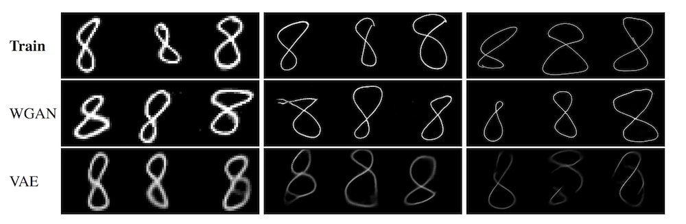

Research Scientist @ ServiceNow | LLM Agent Safety, Red-Teaming, Evaluation & Post-Training | PhD ML
I build safety, evaluation, and post-training systems for LLM agents that use tools, APIs, browsers, and enterprise UIs.
At ServiceNow Research, my work spans three areas:
Red-teaming & agent security: I co-created DoomArena (COLM 2025), a framework for testing both web agents and tool-calling agents against evolving prompt-injection attacks, and placed 6th at the Microsoft LLMail-Inject international prompt-injection challenge (2025). I also co-designed attacks to drive rigorous evaluation of prompt-injection defenses, including simple firewall approaches for tool-calling agents (Indirect Prompt Injections, NeurIPS Workshop 2025).
Evaluation design: I co-designed end-to-end evaluation pipelines — rubric design, annotator workflows, LLM-as-a-Judge calibration, custom data authoring tool for linguists, and joint utility/safety reporting — as applied in DoomArena and the TapeAgents framework.
Post-training & distillation: I built teacher-student distillation pipelines compressing expensive multi-node Teacher agents into Llama-3.1-8B Students matching GPT-4o at ~300× lower inference cost, using SFT and RLHF loops combining human labelers and LLM-as-a-Judge, distilled and evaluated over synthetic environments with simulated users, company APIs, and policy constraints.
I am strongest at the intersection of research and implementation: designing attack and evaluation harnesses, building annotator workflows, calibrating LLM-as-a-Judge systems, and turning research ideas into reusable tools.
I am especially interested in making agentic AI systems useful, robust, and safe under realistic deployment conditions.
I did my PhD at Mila, Université de Montréal with
Simon Lacoste-Julien.
During my PhD I interned at Google Research, where I led multimodal pretraining for dense video captioning on YouTube-scale instructional video, processing terabyte-scale corpora and achieving state-of-the-art on dense video captioning (AACL-IJCNLP 2020).
I hold two MSc. from École Normale Supérieure and CentraleSupélec (ranked 1st of 500 graduates).
Canadian PR based in Montréal. Native French, bilingual English, fluent everyday Mandarin.
arXivTapeAgents: A Holistic Framework for Agent Development and Optimization
Dzmitry Bahdanau, Nicolas Gontier, Gabriel Huang, Ehsan Kamalloo, Rafael Pardinas, Alex Piché, Torsten Scholak, Oleh Shliazhko, Jordan Prince Tremblay, Karam Ghanem, Soham Parikh, Mitul Tiwari, Quaizar Vohra
Tech Report.
paperGeo-Bench: Toward Foundation Models for Earth Monitoring
Alexandre Lacoste, Nils Lehmann, Pau Rodriguez, Evan David Sherwin, Hannah Kerner, Björn Lütjens, Jeremy Andrew Irvin, David Dao, Hamed Alemohammad, Alexandre Drouin, Mehmet Gunturkun, Gabriel Huang, David Vazquez, Dava Newman, Yoshua Bengio, Stefano Ermon, Xiao Xiang Zhu
NeurIPS 2023 (Datasets & Benchmarks).
paperNegative
Momentum for Improved Game Dynamics
Gauthier Gidel, Reyhane Askari Hemmat, Mohammad Pezeshki, Gabriel Huang, Rémi Lepriol, Simon Lacoste-Julien,
Ioannis Mitliagkas.
AISTATS 2019
paperScattering Networks for Hybrid
Representation Learning
Edouard Oyallon, Sergey Zagoruyko, Gabriel Huang, Nikos Komodakis,
Simon Lacoste-Julien, Matthew Blaschko, Eugene Belilovsky.
IEEE Transactions on Pattern Analysis and Machine Intelligence (TPAMI) 2018
Below is an interactive visualization of our paper Negative Momentum for
Improved Game Dynamics:
(a) Learning rate (lr) and momentum (beta) hyperparameters.
(b) Resulting eigenvalues in the complex plane for SGD and SGD+momentum.
There is convergence if and only if all eigenvalues are inside the convergence ball (green). Try to find the
hyperparameters for convergence.
SGD without momentum: using ,
eigenvalues are the convergence ball → SGD with momentum: using
and momentum ,
eigenvalues are the convergence ball →
The Thin-8 dataset consists of 1585 grayscale handwritten images of the digit 8, with resolution
512x512.
16 people were asked to draw the digit 8 about 100 times using a pen on a tablet PC running Microsoft Windows.
It was collected in October 2017 at the University of Montreal. Download Thin-8 dataset here

If you use the Thin-8 dataset, please cite our paper :
@article{huang2018parametric,
title={Parametric Adversarial Divergences are Good Task Losses for Generative Modeling},
author={Huang, Gabriel and Berard, Hugo and Touati, Ahmed and Gidel, Gauthier and Vincent, Pascal and Lacoste-Julien, Simon},
journal={arXiv preprint arXiv:1708.02511},
year={2017}
}
Thanks to Alex, Akram, Aristide, David, Dendi, Eugene,
Jae, Joao, Liam, Rémi, Rosemary, Shawn, Sina, and Xing for scribbling all those samples!